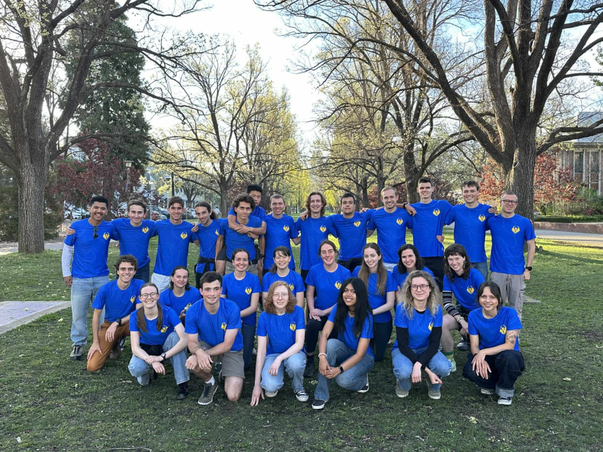
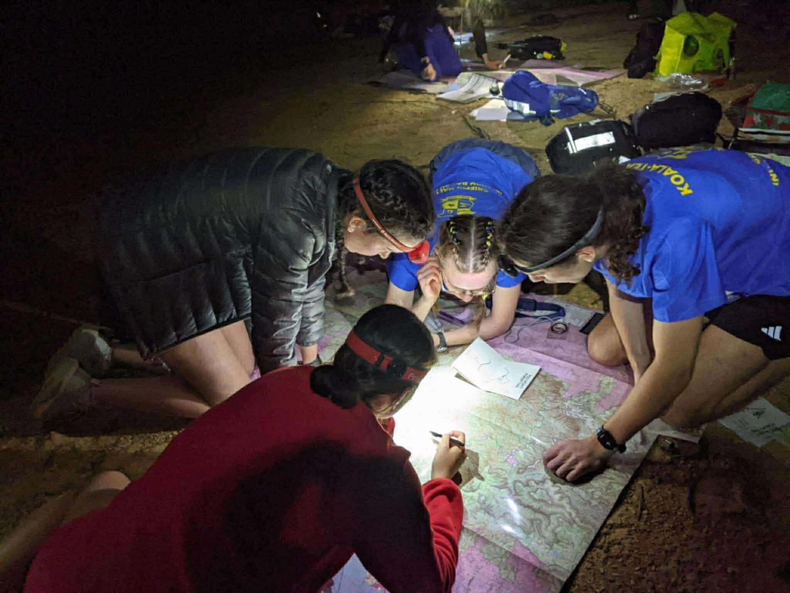
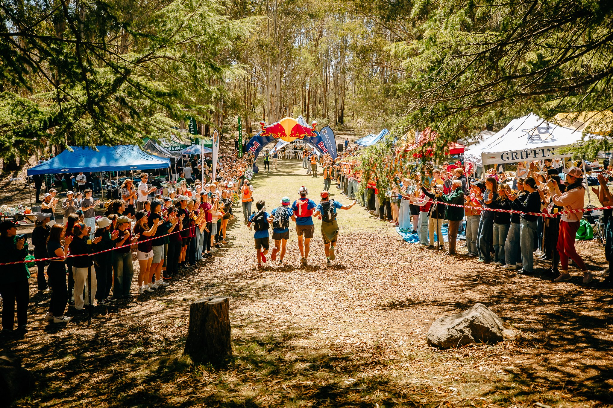

Known for kindness and humour
Griffin is ANU's hall for off-campus students that hosts social, arts and sporting events. Once a year, students of Griffin Hall are blindfolded, driven into the bush, and left to find their own way home. This is Inward Bound.
A unique navigation based, endurance running event
Inward Bound is ANU's annual navigation-based endurance race, based on training exercises from World War 2. Blindfolded teams of four are driven to a remote, unknown location around Canberra and are tasked with finding their location on a map using traditional map and compass methods, in the dark. The first team to get to the secret Endpoint wins its division. Griffin fields teams from the 40-kilometre Division 7 to the brutal 100-kilometre Division 1.
Read the full story
Inward Bound begins in
We host a variety of training exercises every week in preparation for IB, and we want you to run. You don't have to be a runner or a navigator; just be willing to try new things.Find out how to participate →



Join Griffin Hall
Any ANU student who isn't in a residential hall can be a Griffin. Just sign up for the semester and you can run or volunteer. T
Get involvedBack the squad
Gear, transport, entry fees and training all cost money. Sponsors keep Griffin Hall going and get their name in front of the ANU community.
Sponsorship options